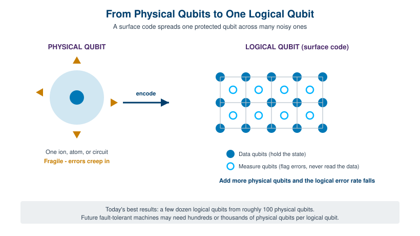
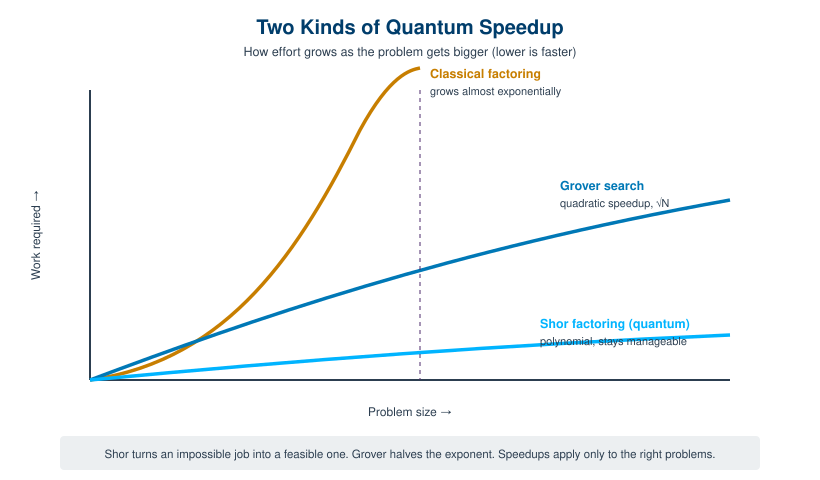

The earlier chapters built the machine: a qubit that holds a blend of zero and one, superposition and entanglement that let many possibilities exist at once, and the hardware platforms competing to make all of it physical. This chapter asks the two questions that decide whether any of that hardware is worth building. First, what do you actually run on a quantum computer, and where does it beat a classical one? Second, why is noise the central obstacle, and how does the field plan to defeat it?
These two topics belong together. A quantum algorithm promises a speedup only if the machine stays coherent long enough to finish the calculation. Real qubits do not. They drift, they leak, they pick up errors faster than any classical bit ever did. So the story of quantum computing in the mid-2020s is really the story of error correction catching up to algorithms that were invented thirty years ago. As of 2026, that catch-up has finally begun in earnest, and several of the figures below are flagged "Verify before publication" because the leading edge moves week to week.
A classical algorithm is a recipe of definite steps performed on definite bits. A quantum algorithm is different in kind, not just in speed. It is a sequence of operations, called gates, applied to qubits that are held in superposition, so that the computation explores many possible answers at the same time. The trick, and it is the whole trick, is to arrange those operations so that the wrong answers cancel out through interference and the right answer is left standing with high probability when you finally measure.
That last clause matters. You never read the superposition directly. Measurement collapses the qubits to ordinary bits, so a quantum algorithm has to be engineered so that the single measurement at the end is overwhelmingly likely to return something useful. This is why you cannot simply "try all answers at once and pick the best." The parallelism is real, but it is locked inside the quantum state, and interference is the only key that gets a useful result out.
Three ideas do the heavy lifting in almost every quantum algorithm. Superposition lets a register of n qubits represent a combination of all 2 to the n possible bit strings simultaneously. Entanglement links qubits so that operations on one ripple through the others, which is how correlations between answers get built. Interference, the part people forget, is the mechanism that amplifies the amplitude of the desired outcome while suppressing the rest. A good quantum algorithm is essentially a carefully choreographed interference pattern.
It follows that quantum computers are not faster classical computers. They are a different tool. For many everyday tasks, sorting a list, running a spreadsheet, serving a web page, a quantum machine offers no advantage at all and would be far slower and more expensive. The speedup appears only for specific problems with the right mathematical structure, where interference can be set up to do the work. The art of quantum algorithm design is finding those problems and mapping them onto gates.

Two algorithms made quantum computing famous, and they illustrate two very different kinds of advantage.
Peter Shor published his factoring algorithm in 1994, and it remains the most consequential result in the field. Given a large integer, Shor's algorithm finds its prime factors in time that grows only polynomially with the number of digits, roughly on the order of the cube of the bit length. The best known classical methods take time that grows almost exponentially, which is why factoring a number with a few thousand bits is considered effectively impossible on classical hardware. [1] [2] A quantum computer large enough to run Shor's algorithm at scale would change that overnight, and that is the source of the alarm about cryptography. Modern public-key systems such as RSA rest on the assumption that factoring is hard. Shor's algorithm dissolves that assumption, which is the entire reason governments and standards bodies are now racing to deploy post-quantum cryptography before a capable machine exists. The machine that can do this does not yet exist, but the algorithm has been understood for three decades.
Lov Grover's algorithm, published in 1996, is the other landmark, and it offers a more modest but far more general speedup. Grover's algorithm searches an unstructured list of N items in roughly the square root of N steps, where a classical search needs to check items one by one and takes on the order of N steps. [1] [3] That is a quadratic speedup, not an exponential one. For a database of a trillion entries, classical search might take a trillion steps and Grover's about a million, which is dramatic, but it is a square-root improvement rather than the night-and-day collapse that Shor delivers for factoring. The compensating virtue is breadth. Almost any brute-force search can in principle borrow Grover's quadratic boost, which is why it shows up in cryptanalysis (it effectively halves the security of symmetric keys), optimization, and many other settings.

Those two are the headliners, but they are not the whole catalog. A growing family of algorithms targets problems where quantum mechanics is the natural language. Quantum simulation, the original motivation Richard Feynman proposed in the 1980s, uses a quantum computer to model molecules, materials, and chemical reactions that are intractable classically, and it is widely seen as the most likely source of early practical value. Quantum machine learning explores whether certain linear-algebra subroutines can be accelerated. Variational algorithms such as the variational quantum eigensolver and the quantum approximate optimization algorithm were designed to wring useful results out of today's imperfect machines by pairing a small quantum circuit with a classical optimizer. The honest caveat is that for several of these, a proven, durable advantage over the best classical methods has not yet been demonstrated. The structure has to fit, and "throw a quantum computer at it" is not a strategy.
Here is the uncomfortable truth that sits underneath every algorithm above. Real qubits are noisy. They lose their quantum state through decoherence in fractions of a second, gates apply imperfectly, measurements misread, and neighboring qubits interfere with one another through crosstalk. Every operation carries a small probability of error, and in a long circuit those small probabilities compound until the output is indistinguishable from noise. A textbook quantum algorithm assumes perfect qubits and perfect gates. Hardware delivers neither.
This is the gap the term NISQ was coined to describe. John Preskill introduced "Noisy Intermediate-Scale Quantum" in 2018 to name the era we are actually living in: machines with somewhere between roughly 50 and a few thousand physical qubits, too many to simulate easily on a classical computer, but lacking the full error correction needed to run deep, reliable circuits. [4] [5] NISQ devices are noisy, and that noise is not a detail to be engineered away with better wiring. It is the defining constraint. It caps how many gates you can apply before the answer degrades, which in turn caps the size of problem you can usefully tackle.
The practical consequence is that NISQ-era work focuses on shallow circuits and on algorithms tolerant of some error, the variational methods mentioned above among them. There has been real value in this period for research, benchmarking, and learning how to program these machines. But there is now broad agreement that NISQ alone will not deliver the transformative applications, the large-scale chemistry or the cryptographically relevant factoring, that justify the field's ambition. Those require running circuits far deeper than noise currently allows. Getting there means correcting errors faster than they accumulate, which moves us out of the NISQ era and into fault tolerance.
BNC in Practice - The classical layer that fights the noise
Error correction is not only a quantum problem. It depends on a fast, precise classical control layer: clean signal generation to drive the gates, tightly synchronized timing across many channels, and low-noise measurement so the syndrome readouts are trustworthy. Sloppy classical electronics inject the very errors the code is trying to remove. Berkeley Nucleonics builds timing and signal-generation instruments used in demanding physics and metrology environments. For specific models, performance figures, and fit to a given quantum-control setup, verify against the current BNC datasheet and talk to a BNC engineer rather than relying on any number quoted here.
Classical computers correct errors too, but the quantum case is harder for two reasons that initially looked fatal. First, the no-cloning theorem forbids copying an unknown quantum state, so you cannot make backup copies of a qubit the way you triple-redundant a classical bit. Second, measuring a qubit to check it destroys the very superposition you are trying to protect. For a while it was unclear whether quantum error correction was even possible.
The resolution, worked out in the mid-1990s, is elegant. You spread the information of one protected qubit across many physical qubits in an entangled pattern, and you measure not the data itself but carefully chosen combinations called syndromes, which reveal whether an error occurred and where, without revealing or disturbing the stored value. This protected unit is a logical qubit, and the physical qubits that make it up are, well, physical qubits. The distinction, introduced in Chapter 8, is the single most important idea in this chapter. When a press release says "1,000 qubits," the first question is always whether those are physical or logical. Today's best machines build a few dozen logical qubits out of roughly a hundred physical ones, and future fault-tolerant designs are expected to need hundreds or thousands of physical qubits for each logical qubit. Figure 9.1 shows the relationship.
The leading scheme is the surface code. It arranges physical qubits in a two-dimensional grid, with data qubits holding the state and measure qubits continuously checking the syndromes of their neighbors. Its appeal is practical: it needs only local, nearest-neighbor connections, which suits real chips, and it tolerates a relatively high physical error rate compared with other codes. The price is overhead, because protecting one logical qubit well takes a sizable patch of the grid. The larger that patch, described by a number called the code distance, the more errors it can catch.
Behind all of this stands the threshold theorem, one of the deepest results in the field. It proves that if the error rate of the individual physical operations can be pushed below a certain critical threshold, then errors can be suppressed arbitrarily by scaling up the code, so that an arbitrarily long and reliable quantum computation becomes possible. [6] [7] In plain terms: get the components just good enough, and from then on you can correct errors faster than they accumulate, and bigger means better rather than worse. The theorem is what turned fault-tolerant quantum computing from a hope into an engineering target. For years the open question was purely experimental. Could anyone actually build hardware that crosses below the threshold? Until late 2024, no one had clearly done it.
Going Deeper - Why measuring a syndrome does not collapse the data
It sounds paradoxical that you can measure a quantum error-correcting code without destroying the information it holds. The resolution is that the syndrome measurements are designed to be commuting checks that ask only "did a relationship between these qubits change?" rather than "what value is stored here?" Each check reads a joint property, such as whether two neighboring qubits agree or disagree, which is a different question from the value of the logical qubit itself. The answer to that joint question reveals the footprint of an error without ever exposing the protected superposition. This is the conceptual heart of quantum error correction, and it is why the field was unsure for years whether it was possible at all.
The last three years are when the threshold theorem stopped being theory. The period from late 2024 through early 2026 produced a cascade of results that, taken together, mark the transition from "interesting physics" toward genuinely fault-tolerant machines. [8]
The headline came from Google Quantum AI in December 2024 with its 105-qubit Willow processor, published in Nature. Willow demonstrated quantum error correction below the surface code threshold for the first time. Concretely, the team encoded a single logical qubit as a distance-7 surface code on about 101 physical qubits, and each time they increased the code distance, from a 3-by-3 to a 5-by-5 to a 7-by-7 lattice, the logical error rate dropped by roughly a factor of two, a suppression factor the paper reports as about 2.14 per step. The largest code reached an error rate near 0.143 percent per cycle and, crucially, the logical qubit outlived its best individual physical qubit by a factor of about 2.4. [9] [10] That last point is the one to remember. For the first time, adding more physical qubits made the encoded qubit better rather than noisier, which is exactly the behavior the threshold theorem promised nearly thirty years earlier.
Willow proved the principle on superconducting hardware with one logical qubit. The 2025 and 2026 results then pushed on the other axis: how many logical qubits can you run at once, and on which platforms?
Trapped-ion systems delivered some of the cleanest numbers. Quantinuum launched its Helios processor in November 2025, a 98-qubit machine reporting record two-qubit gate fidelities around 99.9 percent, and demonstrated 48 logical qubits at a remarkably lean two-to-one physical-to-logical ratio. [11] Neutral-atom platforms scaled even further. QuEra demonstrated 96 logical qubits on a roughly 448-physical-qubit processor using a high-rate code, with error-corrected gates running across all 96 logical qubits at once, roughly doubling the prior record within about a year. [12] Atom Computing, working with Microsoft, reported 24 logical qubits on neutral-atom hardware, and Microsoft's qubit-virtualization work pushed logical-qubit demonstrations across several partners' machines. [12] IBM, meanwhile, set out a detailed roadmap toward a large fault-tolerant system called Starling by 2029, betting on quantum low-density parity-check codes that promise far less overhead than the surface code, an architectural choice that could change the physical-qubit budget significantly if it pans out. [8]
Step back from the individual numbers, because they will be stale by the time this prints, and the shape of the progress is what matters. In 2023 the field had no clear below-threshold demonstration. By late 2024 it had one logical qubit behaving correctly. By early 2026 it had dozens of logical qubits running simultaneously across at least three different hardware platforms, with several independent groups confirming that scaling up suppresses errors rather than adding them. That is a genuine phase change. The hardest work, getting from dozens of logical qubits to the hundreds or thousands needed to run Shor's algorithm at scale, is still ahead, and nobody should pretend the timeline is settled. But the question has shifted from "is fault tolerance possible at all" to "how fast can we scale it," and that is a much better question to be asking.
Take it interactively. The quiz lives on its own page with hidden answers - write your attempt first (even four characters works), then reveal. Self-graded. About 10 minutes.
Or read the questions and answers inline below (preserved for print and offline use).
[1] J. Singh, "Quantum Algorithms 101 - Grover's and Shor's Explained for Everyone." Verify before publication.
[2] P. W. Shor, "Algorithms for quantum computation: discrete logarithms and factoring," Proc. 35th Annual Symposium on Foundations of Computer Science (1994); Shor's algorithm runs in roughly O((log N)^3) time. Verify before publication.
[3] L. K. Grover, "A fast quantum mechanical algorithm for database search," Proc. 28th Annual ACM Symposium on Theory of Computing (1996); quadratic O(sqrt(N)) search speedup. Verify before publication.
[4] J. Preskill, "Quantum Computing in the NISQ era and beyond," Quantum 2, 79 (2018). Verify before publication.
[5] "Noisy intermediate-scale quantum computing," Wikipedia; NISQ devices typically span roughly 50 to 1000 physical qubits without comprehensive error correction. Verify before publication.
[6] "Fault-tolerant quantum computing," Wikipedia; statement of the threshold theorem. Verify before publication.
[7] IonQ, "Demystifying Logical Qubits and Fault Tolerance." Verify before publication.
[8] "Quantum Computing in 2025-2026: Breakthroughs, Players, and the Road to Fault Tolerance," permutations.app; Riverlane, "Quantum Error Correction: 2025 trends and 2026 predictions." Verify before publication.
[9] Google Quantum AI et al., "Quantum error correction below the surface code threshold," Nature 638, 920-926 (2024), doi:10.1038/s41586-024-08449-y. Verify before publication.
[10] Google, "Meet Willow, our state-of-the-art quantum chip," December 9, 2024; distance-7 code on ~101 physical qubits, suppression factor Lambda ~ 2.14, ~0.143% error per cycle, ~2.4x beyond break-even. Verify before publication.
[11] Quantinuum, Helios processor announcement, November 2025; 98-qubit trapped-ion system, ~99.9% two-qubit gate fidelity, 48 logical qubits at a 2:1 ratio. Verify before publication.
[12] QuEra 96-logical-qubit demonstration (high-rate code on ~448 physical qubits) and Atom Computing / Microsoft 24-logical-qubit result, 2025-2026. Verify before publication.